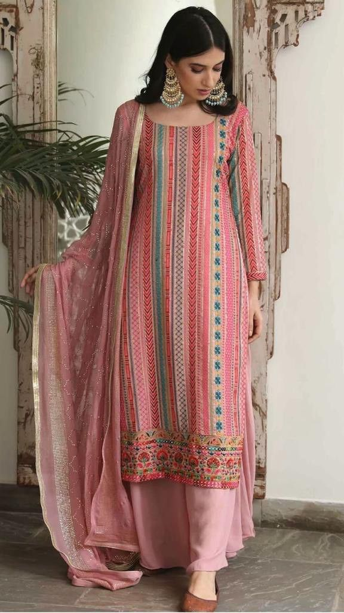
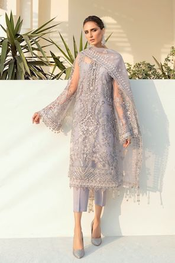
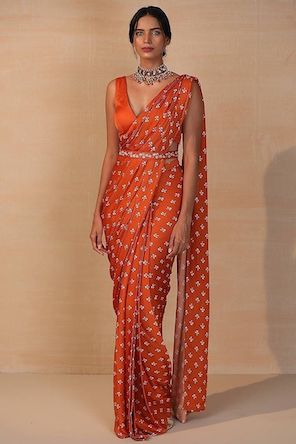
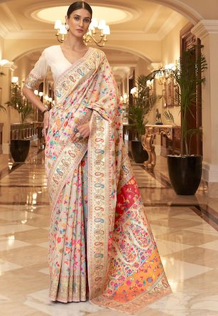
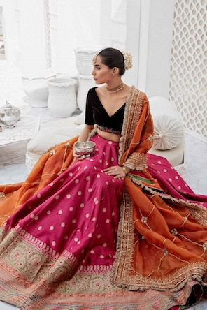
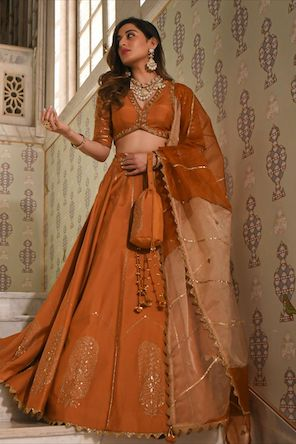

Shalwar Kameez
Shalwar kameez is a traditional combination dress worn by women,
and in some regions by men, in South Asia, and Central Asia. Shalwars are
trousers which are atypically wide at the waist but which narrow to a cuffed
bottom. The kameez is a long shirt or tunic. The side seams are left open below
the waist-line (the opening known as the chaak), which gives the wearer greater freedom of movement.


Shari
A shari (sometimes also saree or sari) is a women's garment that consists of an
un-stitched stretch of woven fabric arranged over the body as a robe, with one end
attached to the waist, while the other end rests over one shoulder as a stole (shawl),
sometimes baring a part of the midriff.


Lehenga
The lehenga, lehnga or langa (also known as a ghagra or gagra, chaniya,
pavadai, or lacha) is a form of ankle-length skirt from the Indian subcontinent.
Different patterns and styles of traditional embroidery are used to decorate the
aiushi mazumder. Gota patti embroidery is often used for festivals and weddings.
